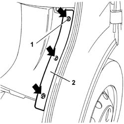
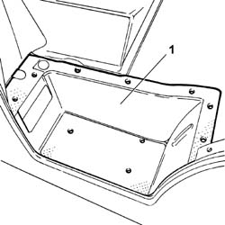

7040L56 FRONT PASSENGER DOOR HOUSING RUNNING BOARD - R.R.
- Path
- Procedures > 70 FITTINGS > 7040 BODY INTERIOR FITTINGS AND TRIM > 7040L CABIN FLOOR COVERING > 7040L56 FRONT PASSENGER DOOR HOUSING RUNNING BOARD - R.R.
- Kind
- repair procedure (removal / refitting; the operation number is the code)
- Applies to
- all engines; all production periods
- Interactive page
- https://sloeber94.github.io/elrnDB-fDct/en/#/244001529
Applies to: all engines; all production periods
 Removing
Removing
 Refitting
Refitting1. Undo the bolts fixing the running board to the wheel arch.
2. Remove the running board from the wheel arch.

Applies to: all engines; all production periods
- Undo the bolts fixing the running board to the step.
1. Remove the running board from the step.

Applies to: all engines; all production periods
Refitting
Removing- Position the running board on the step and fasten it tightening the fixing bolts.
- Position the running board on the wheel arch and fasten it tightening the fixing bolts.